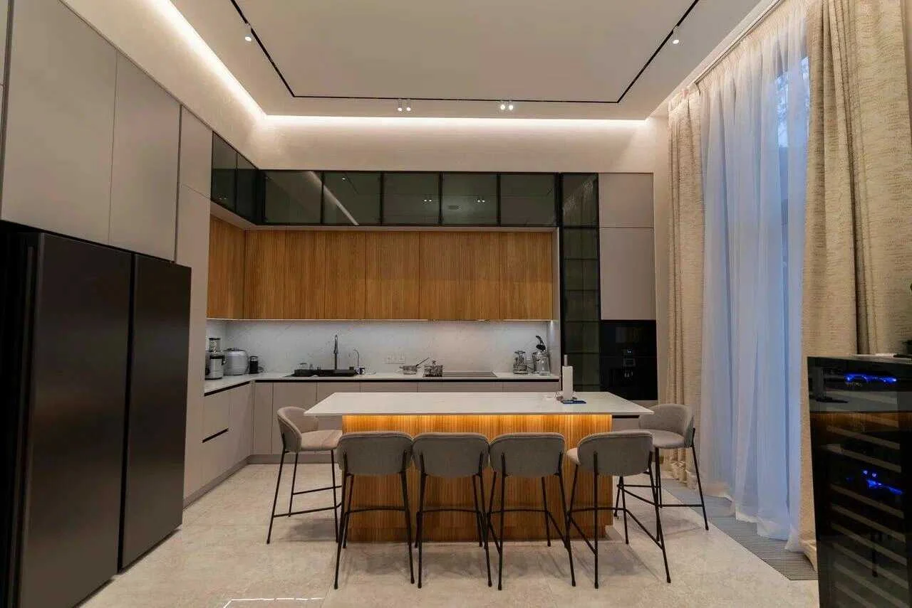
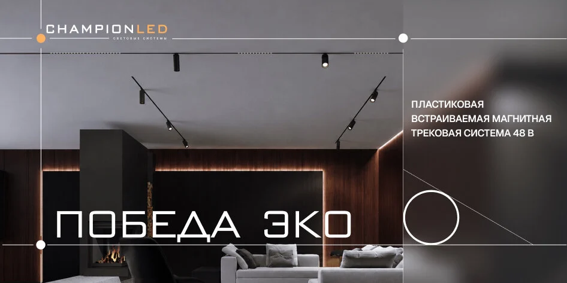

УСТРОЙСТВО СИСТЕМЫ

ПРИМЕНЕНИЕ · УСТРОЙСТВО · НОВИНКИ
Блог ChampionLED
Разбираем освещение квартиры, дома, офиса и магазина, устройство светильников и состав систем. Материалы помогают изучить продукцию и подготовиться к покупке.
Выберите тему или воспользуйтесь поиском
Сбросить фильтры ×РАЗБОР ПРОДУКТА
Из чего состоит светильник «Олимпика»
Модульные светильники поставляются комплектно. Показываем устройство «Олимпики», доступные исполнения и дополнительные опции.
Что внутри материала ↗
ПЕРЕД ЗАКАЗОМ
Что проверить в спецификации перед заказом
О материале ↗Ещё в блоге
Об освещении, светильниках и выборе продукции
Для дома
Освещение кухни: общий свет и рабочая зона
Как связать освещение столешницы, обеденной зоны и всей кухни. Разбираем задачи света и подходящие типы светильников.
О материале ↗
Для дома
Освещение кабинета: свет на столе и вокруг него
Из чего складывается освещение домашнего рабочего места. Обсуждаем расположение света и параметры, которые стоит проверить в каталоге.
О материале ↗
Для бизнеса
Освещение общественных пространств: общий свет и акценты
Как связаны освещение проходов, зон ожидания и мест общения. Рассматриваем типы светильников и их роль в пространстве.
О материале ↗
Для бизнеса
Освещение магазина: товар, витрина и проходы
Как общий и акцентный свет помогают организовать торговое пространство. Разбираем, что учитывать при изучении продукции для магазина.
О материале ↗
Для бизнеса
Освещение офиса: рабочие места и переговорные
Какие задачи решает свет в разных зонах офиса. Объясняем, на какие характеристики и варианты монтажа смотреть в каталоге.
О материале ↗
Разобраться в продукте
Как читать характеристики светильника
Что означают параметры в карточке и какие из них нужны для выбора. Объясняем связь световых характеристик, размеров и монтажа.
О материале ↗ОТ МАТЕРИАЛА — К ПРОДУКТУ
Перейдите от статьи к нужной продукции
В каталоге можно сравнить модели, посмотреть комплектацию и открыть доступные технические материалы.